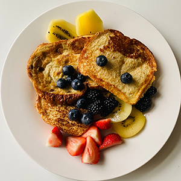

Calamari
Ingredients
- 3 cups vegetable oil
- ¼ cup all-purpose flour
- 1 teaspoon salt
- 1 teaspoon dried oregano
- ½ teaspoon ground black pepper
- 12 squid, cleaned and sliced into rings
- 1 lemon
- Heat oil in a deep-fryer or large saucepan to 350 degrees F (175 degrees C).
- Mix together flour, salt, oregano, and pepper in a medium bowl. Dredge squid in flour mixture.
- Fry squid in hot oil until light brown, 2 to 3 minutes. Do not overcook, or squid will be tough. Drain squid on a paper towel-lined plate. Serve with lemon wedges.
Content for New article Tag Goes Here
Lasagna
Ingredients
- 12 lasagna noodles
- 4 cups mozzarella cheese
- ½ cup parmesan cheese
- ½ pound lean ground beef
- ½ pound Italian sausage
- 1 onion
- 2 cloves garlic
- 36 ounces pasta sauce
- 2 tablespoons tomato paste
- 1 teaspoon Italian seasoning
- Preheat the oven to 350°F. In a large pot of salted water, boil lasagna noodles until al dente according to package directions. Drain, rinse under cold water, and set aside.
- In a large skillet or dutch oven, brown beef, sausage, onion, and garlic over medium-high heat until no pink remains. Drain any fat.
- Stir in the pasta sauce, tomato paste, Italian seasoning, ½ teaspoon of salt, and ¼ teaspoon of black pepper. Simmer uncovered over medium heat for 5 minutes or until thickened.
- In a separate bowl, combine 1 ½ cups mozzarella, ¼ cup parmesan cheese, ricotta, parsley, egg, and ¼ teaspoon salt.
- Spread 1 cup of the meat sauce in a 9×13 pan or casserole dish. Top it with 3 lasagna noodles. Layer with ⅓ of the ricotta cheese mixture and 1 cup of meat sauce. Repeat twice more. Finish with 3 noodles topped with remaining sauce.
- Cover with foil and bake for 45 minutes.
- Remove the foil and sprinkle with the remaining 2 ½ cups mozzarella cheese and ¼ cup parmesan cheese. Bake for an additional 15 minutes or until browned and bubbly. Broil for 2-3 minutes if desired.
- Rest for at least 15 minutes before cutting.
Content for New article Tag Goes Here
Pumpkin Pie
Ingredients
- 1 (15 ounce) can pumpkin puree
- 1 (14 ounce) can Eagle Brand Sweetened Condensed Milk
- 2 large eggs
- 1 teaspoon ground cinnamon
- ½ teaspoon ground ginger
- ½ teaspoon ground nutmeg
- ½ teaspoon salt
- 1 (9 inch) unbaked pie crust
- Preheat the oven to 425 degrees F (220 degrees C).
- Whisk pumpkin puree, condensed milk, eggs, cinnamon, ginger, nutmeg, and salt together in a medium bowl until smooth.
- Pour into crust.
- Bake in the preheated oven for 15 minutes.
- Reduce oven temperature to 350 degrees F (175 degrees C) and continue baking until a knife inserted 1 inch from the crust comes out clean, 35 to 40 minutes.
- Let cool before serving.
Content for New article Tag Goes Here
Spaghetti Carbonara
Ingredients
- 3 Tbsp. kosher salt
- 2 oz. Parmesan or Pecorino Romano
- 4 oz. guanciale (salt-cured pork jowl)
- 4 large egg yolks
- 2 large eggs
- Freshly ground black pepper
- 2 Tbsp. extra-virgin olive oil
- 1 lb. spaghetti, bucatini, or rigatoni
- Bring a large pot of lightly salted water to a boil. Cook spaghetti in boiling water, stirring occasionally, until tender yet firm to the bite, about 12 minutes. Drain, toss spaghetti with 1 tablespoon olive oil, and set aside.
- Place diced bacon in a large skillet over medium heat; cook and stir until evenly browned, about 10 minutes. Drain bacon on paper towels, reserving 2 tablespoons bacon fat in the skillet.
- Add 1 tablespoon olive oil to bacon fat in the skillet. Add chopped onion and cook over medium heat until onion is translucent. Add minced garlic and cook until fragrant, about 1 minute. Add wine and cook 1 minute more.
- Return cooked bacon to the skillet; add cooked spaghetti. Toss to coat and heat through, adding more olive oil if it seems dry or sticks together. Add beaten eggs and cook, tossing constantly with tongs or a large fork, until eggs are barely set. Quickly add 1/2 cup Parmesan cheese and toss again. Season with salt and pepper (remember that bacon and Parmesan are very salty).
- Serve warm with chopped parsley sprinkled on top and extra Parmesan cheese at the table.
Content for New article Tag Goes Here

French Toast
Ingredients
- ⅔ cup milk
- 2 large eggs
- 1 teaspoon vanilla extract (Optional)
- ¼ teaspoon ground cinnamon (Optional)
- salt to taste
- 6 thick slices bread
- 1 tablespoon unsalted butter, or more as needed
- Whisk milk, eggs, vanilla, cinnamon, and salt together in a shallow bowl.
- Lightly butter a griddle or skillet and heat over medium-high heat.
- Dunk bread in the egg mixture, soaking both sides.
- Transfer to the hot skillet and cook until golden, 3 to 4 minutes per side.
- Serve hot.
Content for New article Tag Goes Here
Content for New main Tag Goes Here